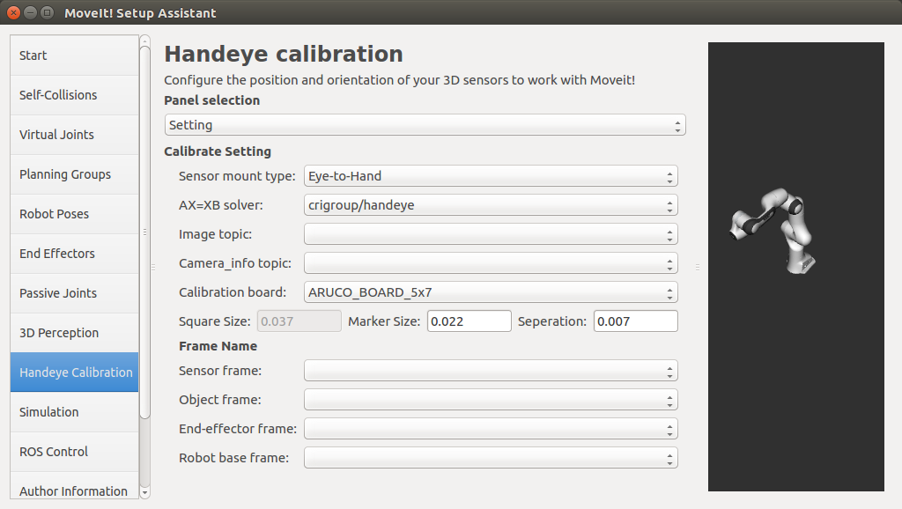
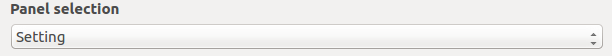
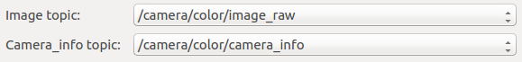
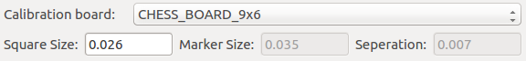
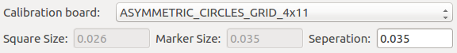
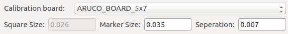
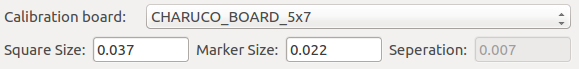
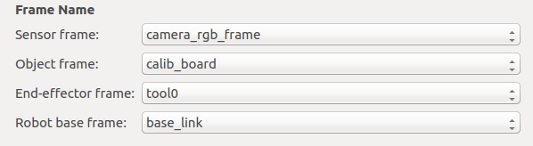

Handeye Calibration Tutorial¶
Overview¶
Handeye Calibration screen of MoveIt! Setup Assistant is used to get the position and orientation of 3D sensors (e.g. cameras) with respect to a robot arm. It can be used to calibrate any robot arm with a USB camera, RGBD camera or Stereo camera. It can also be used to calibrate other kind of 3D sensor if an object localization method with this sensor is available, .
Getting Started¶
Prerequisites:
Make sure MoveIt! Setup Assistant can work properly and the UI interface similar to the figure above shows up.
Make sure you have a camera which can publish RGB Image topic and CameraInfo topic.
Gurantee that the robot arm ROS dirver can publish JointState topic, and the robot_state_publisher is brought up to publish tf info of links.
Download and install handeye package:
sudo apt-get install ros-kinetic-handeye
Run the handeye service:
rosrun handeye handeye_server.py
The panel selection combobox provides two options
SettingandCalibration:Choose
Settingat first to config the parameters of hand-eye calibration.Calibrationpanel includes the UI components to make the calibration operations.
Step 1: Set Sensor Mount Type¶
There are two types of camera-robot setup: Eye-to-Hand and Eye-in-Hand:
Eye-to-Hand: the camera is fixed in front of or beside the robot, with the robot in the camera’s FOV.Eye-in-Hand: the camera is mounted on the robot arm, mostly on the end-effector link.Choose the sensor mount type according to your camera-robot setup:
Step 2: Select AX=XB Solver¶
Usually, hand-eye calibration is solved by AX=XB method. During the calibration process,
the samples of two transforms are taken when the robot arm moves to a different pose:
- Transform from the detected object to the camera: (cTo)i, i represents the ith sampling.
- Transform from the robot end-effector to the robot base: (bTe)i, i represents the ith sampling.
The first transform can be obtained by detecting the 6D pose of the object (i.e. calibration board) with respect to the camera. The second transform can be obtained by computing the foward kinematics from the robot base frame to the robot end-effector frame.
Currently, only the AX=XB solver TsaiLenz1989 in the library crigroup/handeye is provided:
If you are not interested in the details of AX=XB, you can skip the rest content of this step.
For
Eye-in-Handcalibration,Xis eTc, AX=XB is:(eTb)i+1* (bTe)i* eTc= eTc* (cTo)i+1* (oTc)i
For
Eye-to-Handcalibration,Xis bTc, AX=XB is:(bTe)i+1* (eTb)i* bTc= bTc* (cTo)i+1* (oTc)i
For more background review of the hand-eye calibration, you can refer to this link which includes a good collection of relevant academic researches in this field.
Step 3: Select Image Topic and CameraInfo Topic¶
Choose the proper RGB Image topic, and CameraInfo topic:
If you are using a RGBD camera, such as realsense, most probably the two topics would be:
- The RGB Image topic is: /camera/color/image_raw
- The CameraInfo topic is: /camera/color/camera_info
Note
Once clicked, the two combobox is updated. If no topic names pop up,
please check if the RGB Image topic and CameraInfo topic is being published.
After choosing an Image topic, you can switch to Calibration panel to check if the image is being displayed.
Step 4: Select Calibration Board¶
By default, the detection of four kinds of OpenCV calibration boards are supported: CHESSBOARD, ASYMMETRIC_CIRCLES_GRID, CHARUCO and ARUCO.
Download and print the calibration board on an A4 paper without the border shrink. You can use any one of the calibration boards below:

{kind=link}
{kind=link}
{kind=link}
{kind=link}
{kind=link}
{kind=link}
{kind=link}
Note
For eye-in-hand calibration, the board needs to be installed on the robot end-effector.
For eye-to-hand calibration, the board can be put in the workspace of the robot.
The chessboard and asymmetric_circles_grid can only be detected when they are completely
in the FOV of the camera and not occluded. The charuco and aruco board can be detected
even if they are occluded partially. The experience shows that the aruco board works well in a close
distance to the camera. While the asymmetric_cirles_grid works better in a remote distance.
Choose the board you are using from the
Calibration boardcombobox:If
CHESS_BOARD_9X6is chosen, fill in the precise square size in meters:If
ASYMMETRIC_CIRCLES_GRID_4X11is chosen, fill in the precise circles seperation distance in meters:If
ARUCO_BOARD_5X7is chosen, fill in the precise marker size and markers seperation distance in meters:If
CHARUCO_BOARD_5X7is chosen, fill in the precise black square size and marker size in meters:
Note
If you are not using the default board as the detecting object,
choose other and make sure the TF transform from the object frame to the 3D sensor frame is being published.
Step 5: Set Frame Names¶
As explained in Step 2: Select AX=XB Solver, the hand-eye calibration will lookup for two kinds of transforms when the robot arm moves to different poses, i.e. the transform from the detected object to the camera, and the transform from the end-effector to the robot base. Therefore, you must specify the names of the four frames on the screen:
- Sensor frame: the base frame of the 3D sensor, the default value is “camera_link”.
- Object frame: the frame of the detected object. If you choose a default calibration board in Step 4: Select Calibration Board, the value would be “calib_board”.
- End-effector frame: If you are making a
Eye-to-Handcalibration, this is the robot link that the calibration board attached to. If you are making aEye-in-Handcalibration, this is the robot link that the camera mounted on, e.g. “tool0” for the UR robot and “panda_link8” for the Franka Panda robot. - Robot base frame: the base link of the robot arm, the default value is “base_link”.
Note
If the right name cannot be found in the pop-up list, you can check the TF information through tf2 tools.
Step 6: Start Calibration¶
Once the previous steps are done, you can switch to the Calibration panel to start the calibration process:
{kind=link}
During the calibration process, the actions needed are:
- Move the calibration board to the FOV of the camera.
- Manually control the robot to rotate and translate the end-effector randomly in its X, Y, Z axes.
- Check the image-view to make sure the pose of the calibration board is always recognizable.
- Click the
Take Snapshotbutton to take a sample when the robot moves to a stable pose. - The rotation and translation components of the sampled transforms can be checked in the left tree-view by clicking and expanding the sub-items.
Note
The range of rotation and translation for the end-effector should be as much as possible. If nothing shows up in
the image-view or the pose estimation of a default calibration board is not correct,
please check if the Image and CameraInfo topics are set correctly in Step 3: Select Image Topic and CameraInfo Topic.
Take as many samples as possible, at least 15 samples are recommanded. Be careful! Reset button is used to clear
all the samples.
Step 7: Compute Camera Robot Transform¶
When enough samples are taken, click the Compute button to get the camera-robot transform.
Step 8: Check Calibration Result¶
Click Publish button to publish a static TF transform between the camera and robot.
The type of the static transform depends on the camera-robot setup chosen in Step 2: Select AX=XB Solver.
You can check the result by bringing up ROS RViz and see if the frames of the camera and detected object are registered into
the robot arm systems. The result will be stored in handeye_calibration.yaml under MoveIt! Config Package/config.
Open Source Feedback
See something that needs improvement? Please open a pull request on this GitHub page